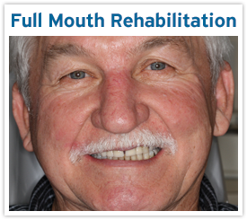

Get to know Salt Lake City dentist, Dr. Brigham Stoker DDS, here at the Salt Lake City Dental Center to see if his practice is right for you.
Meet Dr. Stoker ›

Call us today to schedule a dental exam, a walk in emergency visit, or a consultation. We’re even open on Fridays!
Schedule Today ›

See some of the many dental services we offer here at Salt Lake City Dental Center by choosing one of the featured cases above.
Featured Case ›

Welcome to the Salt Lake City Dental Center webpage, home of your new Salt Lake City Dentist! I hope this site will help you get to know our dental practice a little bit better and be useful in helping you make your choice of dentists in Salt Lake. My goal is to create a site that helps you, as a dental patient, gain a greater understanding of modern family dentistry and the dental services we offer to all patients, with or without dental insurance. As our website grows, I plan to continue adding educational content and stories of real patients receiving the treatments they need in our Salt Lake dental clinic. I want to help you understand concepts like how getting tooth fillings before cavities progress too far can help avoid more costly procedures, how to know when you may need a dental crown, how a root canal isn’t as bad as you think, how mini dental implants can stabilize your existing dentures, and how standard dental implants are changing dentistry. And ultimately, I want to demonstrate that whether you are looking for basic tooth whitening or a full mouth reconstruction, we will do our best to provide the same high quality of service and comfort to every patient. Take a look around our site, and check back for updates soon. Thanks for visiting!
-Dr. Brigham Stoker, DDS (and staff!)
Reviews: (read more reviews here to see why our patients love us!)
“Everyone knows that the first time that you see a new dentist it is the most nerve racking experience. When I walked into his office his staff automatically made me at easy. Dr. Stoker and his staff teat you with the respectable and best possible care. They also are great at explaining what is needed to complete your dental needs. This was the best part and experience that I have ever had. Dr. Stoker seems to have the most equipment as it appears to me. I had some problems with pain Dr. Stoker and his staff was able to help resolve it and explain it to so that I could understand. Would I recommend him and his staff that is an astounding yes.” -Gerry F.
“I’m a raving new fan of Dr. Stoker. I am so impressed. He is honest and will tell you candidly what your options are. He is skillful, has steady hands and is careful to make sure you aren’t experiencing any pain whatsoever. I didn’t even feel the needle go in. That’s huge for me. His office is beautiful and professional, and his staff is exceptional.” -Jory A.
“Doctor Stoker is the BEST. We found his practice online, during an emergency. He called me back late on a Saturday night just to make sure I was taken care of. Dr. Stoker and staff have been extremely nice, professional and honest. Their facility is top-notch and comfortable. I have many family members in the dental field, yet I have never met someone of his caliber. If you’re thinking about calling him, you will not regret it. I will remain his patient as long as possible. Keep up the great work!!” -Kirk M.